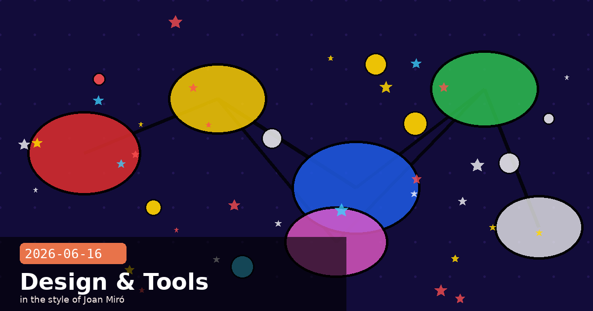

Claude for Small Business, Finance Agents & Claude Design

🧭 Claude for Small Business: 15 Agentic Workflows Built for the Tools You Already Use
Anthropic's Claude for Small Business package, launched on May 13, targets the 33 million US small businesses that lack in-house AI teams. Rather than asking owners to learn prompt engineering, the product ships as a toggle-install that drops 15 pre-built agentic workflows and 15 reusable skills directly into tools most small businesses already pay for: Intuit QuickBooks, PayPal, HubSpot, Canva, DocuSign, Google Workspace, and Microsoft 365. The install requires no configuration — Claude reads the existing permissions and data connections in each tool and starts working within them.
What the 15 workflows actually do
The workflows span six business functions. A few worth understanding in detail:
30-day cash-flow forecast (QuickBooks + PayPal): Settles your QuickBooks cash position against incoming PayPal settlements, builds a rolling 30-day forecast, ranks overdue items by days outstanding, and queues reminder emails for your approval before any message is sent.
Month-end close packet (QuickBooks): Reconciles books against all payment processor settlements, flags mismatches above a configurable threshold, writes a plain-English P&L narrative, and exports a close packet formatted for your accountant — typically a process that takes 2–4 hours, compressed to a review-and-approve step.
Sales campaign from CRM data (HubSpot): Segments your contact list by engagement score, generates personalised email drafts for each segment, and schedules sends — all within HubSpot's existing campaign tools, so deliverability and unsubscribe management are unchanged.
Contract tracking and renewal alerts (DocuSign): Reads signed agreements, extracts renewal dates and key terms, and surfaces an action queue 60 days before each deadline.
The approval model is the key safety design
Every workflow that sends, posts, or pays requires explicit user approval before execution. Claude builds the plan and queues the action; you click approve. This is not optional or configurable off — it is baked into the workflow architecture. For small business owners who cannot afford an error that sends wrong payment amounts or misfired email campaigns, this is the design decision that matters most. The trade-off is that full autonomy (letting Claude run end-to-end without touchpoints) is an opt-in per workflow, not the default.
The AI Fluency for Small Business course
Anthropic launched the product alongside a free online AI fluency course co-developed with PayPal and taught by small business owners who have already integrated AI into their operations. The course is available at Anthropic Academy — it is not a sales funnel for Claude for Small Business but a standalone educational resource. For developers building on Claude who interact with SMB clients, the course gives useful signal about how non-technical owners think about AI adoption: the biggest barrier is not cost but uncertainty about what can go wrong when Claude takes an action autonomously.
Claude for Small Businessagentic workflowsQuickBooksHubSpotPayPalCanvaDocuSignGoogle WorkspaceMicrosoft 365approval modelAI fluencyDaniela AmodeiSMB
🧭 Agents for Financial Services: 10 Templates, Eight New Data Connectors, and a Benchmark Result
Released on May 5, Anthropic's Agents for Financial Services package extends the agentic template approach to institutional and professional finance use cases. The ten templates ship as plug-ins for Claude Cowork and Claude Code, or as cookbooks for Claude Managed Agents, giving teams three integration paths depending on whether they want a no-code, low-code, or fully programmatic deployment.
The ten templates
Split across two groups:
Research & client coverage: pitch builder, meeting preparer, earnings reviewer, model builder, market researcher
Each template bundles a skill set, data connectors, and a subagent architecture. The KYC screener, for example, combines identity document parsing, sanctions list lookup via a Verisk connector, and a structured decision output that a human compliance officer reviews before any customer is flagged or cleared.
Eight new data connectors
Anthropic added eight financial data connectors that work across all ten templates:
Dun & Bradstreet (company credit and risk data)
Fiscal AI (real-time filings and earnings data)
Financial Modeling Prep (valuation models and ratios)
Guidepoint (expert network access)
IBISWorld (industry research)
SS&C Intralinks (deal room document access)
Third Bridge (analyst transcripts)
Verisk (insurance and risk analytics)
Moody's added a dedicated MCP App providing credit ratings and data on over 600 million companies — the largest single data source in the connector library.
The benchmark
Anthropic reported that Claude Opus 4.7 achieves 64.37% on the Vals AI Finance Agent benchmark — a task suite covering earnings analysis, deal modelling, regulatory document interpretation, and portfolio construction decisions. The number is meaningful context for teams evaluating whether to run high-stakes financial workflows autonomously versus with human-in-the-loop review steps. A score of 64.37% means roughly one in three agent actions on complex financial tasks will require correction; the appropriate architecture is one that surfaces those correction points before they have downstream consequences.
AML investigations from days to minutes — FIS's pilot
FIS CEO Stephanie Ferris described their production pilot compressing anti-money laundering investigations from "days to minutes" using a Claude-based agent that cross-references transaction data against the Verisk and D&B connectors. The workflow still routes flagged cases to human investigators for final determination — the speed gain comes from automated evidence assembly and initial risk scoring, not from replacing the human decision. This is the pattern most regulated-industry deployments are converging on: Claude handles evidence gathering and preliminary classification; humans own the consequential decision.
finance agentsVals AI benchmarkKYC screeningAMLdata connectorsMoody's MCPVeriskD&BClaude CoworkManaged AgentsClaude Opus 4.7FIShuman in the loop
🧭 Claude Design by Anthropic Labs: AI Visual Collaboration in Research Preview
On April 17, Anthropic launched Claude Design — a product from its experimental Anthropic Labs division that lets you collaborate with Claude to produce polished visual output: design mockups, interactive prototypes, slide decks, one-pagers, and marketing materials. It is available in research preview to Claude Pro, Max, Team, and Enterprise subscribers and is powered by Claude Opus 4.7.
What makes it different from "Claude in a chat box"
The core capability is design system awareness. Rather than generating generic visuals, Claude Design reads your team's existing codebase and design files (Figma exports, CSS design tokens, brand guidelines) and automatically applies your brand's colours, typography, and components to every output it produces. The result is artefacts that fit within your existing design language rather than requiring wholesale restyle before use.
Key workflow features
Multi-format input: Start from a text prompt, upload DOCX/PPTX/XLSX files, point Claude at a GitHub repository, or capture website elements directly.
Fine-grained editing: Inline comments, direct text edits, and sliders for spacing, colour saturation, and layout density — so you can iterate without re-prompting from scratch.
Multi-format export: Share as a URL, export to Canva, save as PDF/PPTX, or download as an HTML folder. The Canva integration is live at launch — Canva Co-Founder Melanie Perkins described it as "seamless" to move drafts between the two tools.
Claude Code handoff: Any prototype produced in Claude Design can be handed directly to Claude Code for implementation, preserving design intent through to the production codebase.
The "research preview" label means something specific here
Anthropic Labs products are explicitly not production-ready features — they are experiments Anthropic ships to gather real-world feedback before deciding whether to graduate them into core Claude products or shut them down. The practical implication: the Claude Design API surface, export formats, and pricing can change without the deprecation notice periods that apply to production Claude API endpoints. If you are building a workflow that depends on Claude Design outputs, treat the integration as experimental and pin to specific output formats rather than parsing Claude Design URLs as stable resources.
Who it is actually for right now
The most credible early use cases from the launch announcement are:
Product managers and founders who need to communicate product direction visually but lack design resource — the Aneesh Kethini / Datadog quote ("what used to take a week of back-and-forth now happens in a single conversation") describes this exactly.
Design teams using Claude Design for rapid direction exploration before committing to detailed Figma work — Olivia Xu of Brilliant cited interactive prototypes as the specific step-change capability.
Marketing teams generating campaign collateral variations at volume, particularly when brand guidelines are already machine-readable.
Dedicated designers doing detailed production work are not the target audience yet — fine-grained control of individual design decisions still requires dedicated tooling.